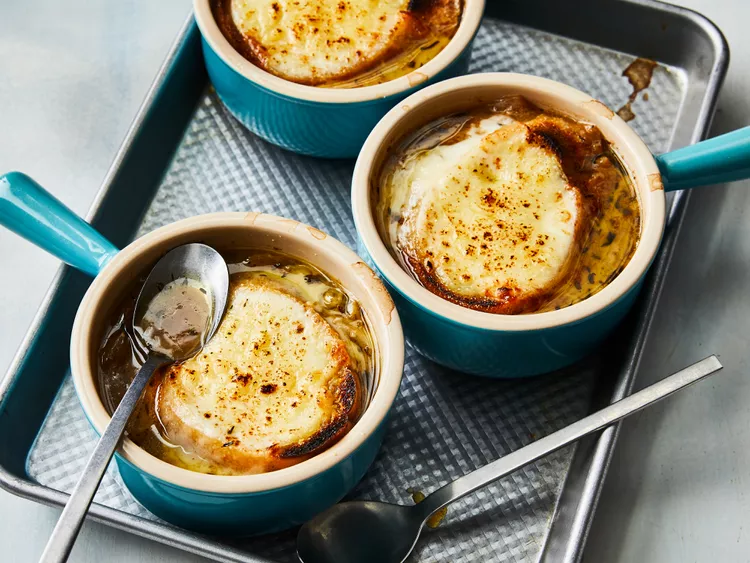

French Onion Soup Ingredients
- 1/2 cup unsalted butter
- 2 tablespoons olive oil
- 4 cups sliced onions
- 5 cups beef broth
- 2 tablespoons dry sherry
- 1 teaspoon dried thyme
- 1 pinch salt and pepper to taste
- 4 slices French bread
- 4 slices provolone cheese
- 2 slices Swiss cheese, diced
- 1/4 cup grated Parmesan cheese
French Onion Soup Directions
- 1. Melt butter with olive oil in an 8-quart stock pot over medium heat. Add onions to butter and continually stir until tender and translucent. Do not brown the onions.
- 2. Add beef broth, sherry, and thyme. Season with salt and pepper. Let simmer for 30 minutes.
- 3. Meanwhile, preheat the oven's broiler.
- 4. Ladle soup into oven-safe serving bowls and place one slice of bread on top of each (bread may be broken into pieces if you prefer). Layer each slice of bread with a slice of provolone, 1/2 slice diced Swiss and 1 tablespoon Parmesan cheese.
- 5. Place bowls on a cookie sheet and broil in the preheated oven until cheese bubbles and browns slightly, 2 to 3 minutes.
- 6. Serve hot and enjoy!